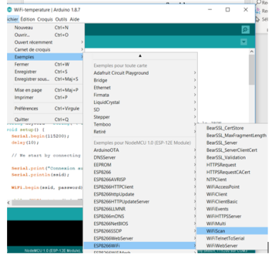

Que faut-il retenir ?
Fondamental : Les couches...
Pour communiquer l'IdO fonctionne en couches, dans notre exemple d'utilisation en WiFi :
la couche WiFi est la couche support de l'information
la couche IP permet d'obtenir une adresse IP
TCP est la couche de transport
dans la couche application se trouve HTTP le protocole de communication
Complément : Remarque concernant le programme WiFiScan
Connexion au WiFi :
1
// We start by connecting to a WiFi network2
WiFi.mode(WIFI_STA);
3
WiFiMulti.addAP("SSID", "passpasspass");
Dans le setup :
On configure le module WiFi en mode Station (il existe aussi le mode point d'accès AP). Il s'agit d'une commande spécifique au module ESP.
On ajoute un point d'accès AP avec la méthode addAP.
SSID est l'identifiant de la box
passpasspass est la clé WiFi associée à la box.
